Stay Classy
A Brief Explanation of Classes
02/15/15
Object oriented programming is obviously centered around objects. Objects make up everything in the universe of OOP. Objects are what we use to store and retrieve information, interact with one another, and perform any task within a program.
Classes are blue prints for objects. They define what objects are, and what they can do. Since classes define objects, they are the foundation of object oriented programming. Every object (including classes themselves) are defined by classes. Let's create a class for a specific object, to show how classes operate.
For this demonstration, I decided to go with a 'Cat class'. When we create an object, or an instance of this class, we will be able to manipulate/interact with it as we define in the Cat class. First, we need to define the class and give it an initialize method.
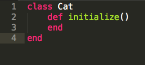As arguments, we add some attributes to fill in for our cats when they are created. Then we assign them to what are called 'instance variables'.
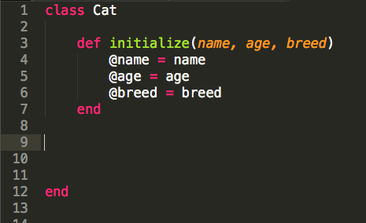Instance variables remain a part of the individual instance of each cat you create. They can be accessed by other instance methods that we will add to our Cat class.
We could add an individual 'reader' method to access and read the attributes we give to our cats. That would look like this:
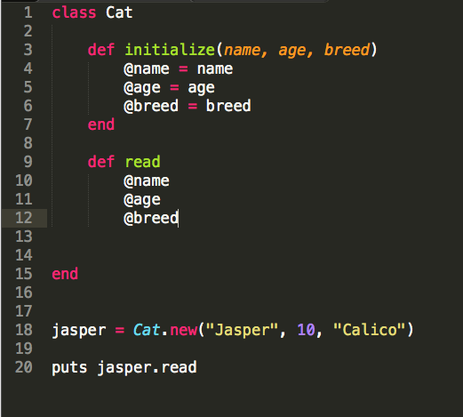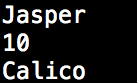
That looks kind of messy though. A much easier and flexible way to do this is to use an attr_reader method:
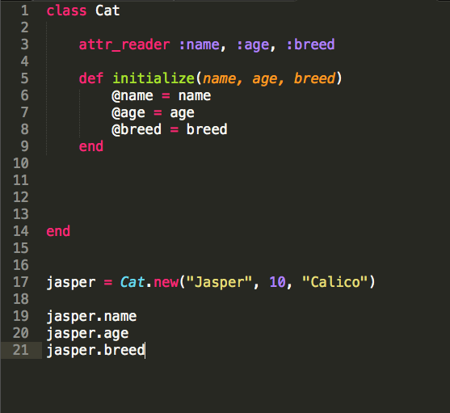This way we can easily get a reading on the attributes we assign to our cat and call them individually.
Now, let's give our cat some actions. First let's give our cats the ability to meow.
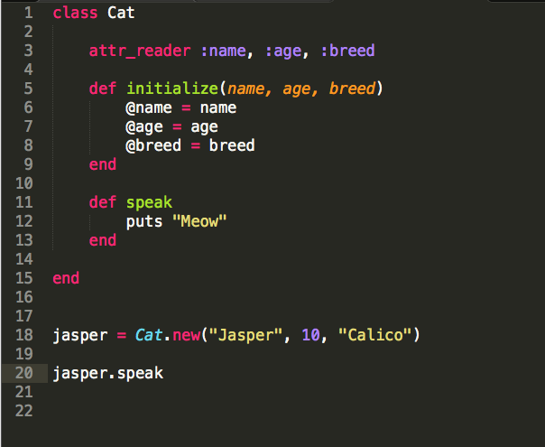 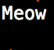Alright now let's add some more interesting interactivity. We'll set up a 'feed' method that passes an argument to our cat. Depending on what argument you pass, the cat will react differently. If the cat is fed too many times, it will become full and ignore whatever food you give it.
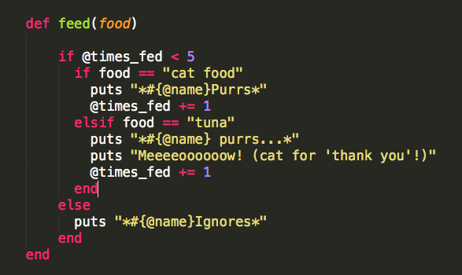
We will also add a @times_fed = 0 to our initialize method to start the count at zero.
Then we'll add a sleep method that will reset the count.

We call the feed method once with the argument of cat food...
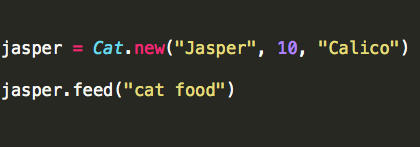And our cat purrs.
Here we will call the method past the limit of 5, sleep to reset the counter, and then feed the cat tuna.
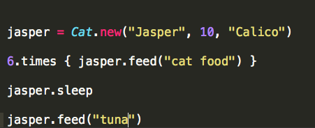 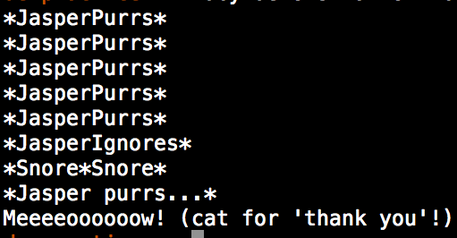As you can see, when we when we call the methods in order we get the expected results. You're probably starting to imagine, if you haven't already, the large implications this has on a program.
Classes play a vital role in the life of any program. They enable objects to do anything that we need them to do. Instance variables and methods are literally the primary tools we need to manipulate those objects in a uniform fassion after they are created. And our initialize method takes arguments that make our objects unique in their attributes.
I hope that you have enjoyed this brief introduction to classes in Ruby! If you enjoyed this, you might want to check out the links to my other blogs below.